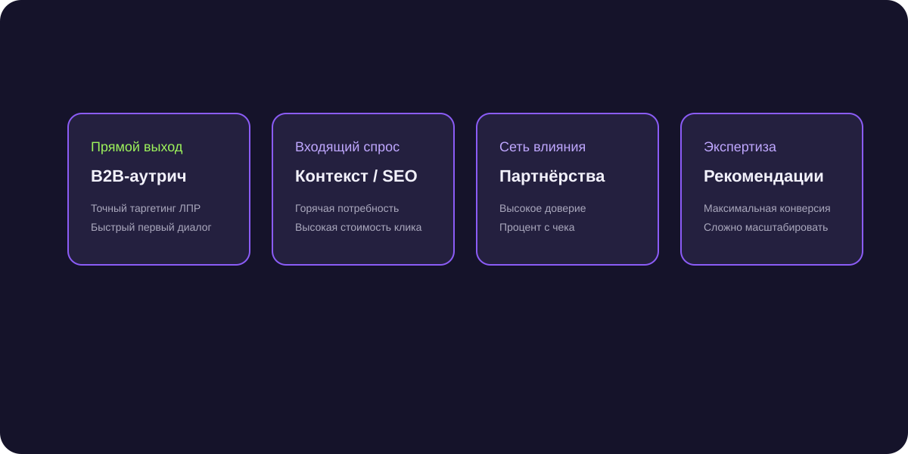

B2B-выставки: как собирать контакты на стенде и дожимать их до контрактов
Компании тратят миллионы на аренду стенда, а потом стопки визиток пылятся на столах менеджеров неделями. Разбираем систему оцифровки и дожима лидов с выставок.

Короткий ответ
Эффективная работа на B2B-выставке строится на мгновенной цифровой фиксации контакта (сканирование бейджей или QR-код со ссылкой на Telegram-бота с презентацией) и запуске автоматической цепочки персональных сообщений в первые 24 часа после встречи, пока интерес заказчика находится на максимуме.
Оцифровка контактов прямо на стенде без бумажных визиток
Бумажные визитки теряются в 70% случаев. Разместите на бейджах менеджеров и стойках QR-код: «Сканируйте, чтобы получить каталог и спецусловия выставки в Telegram». Контакт мгновенно попадает в CRM.
Правило первого сообщения в течение 24 часов
Через неделю после выставки посетитель забывает, с кем общался. Первое короткое сообщение с фото со стенда («Рады были познакомиться на выставке Металлообработка!») должно уйти на следующее утро.
Специальный оффер с ограничением по времени (дедлайн)
Предложите участникам выставки бронь акционной цены на образцы или бесплатный выезд инженера до конца текущего месяца для ускорения сделки.
Частые вопросы по теме
Как мотивировать менеджеров на стенде работать активно?
Установите персональный KPI: не просто количество собранных контактов, а число квалифицированных лидов, переданных в CRM за каждый день выставки.
Стоит ли писать тем, кто просто прошел мимо и взял буклет?
Нет, концентрируйтесь на тех, с кем состоялся живой предметный диалог от 3 минут.
380 оцифрованных контактов за 4 дня выставки и 19 контрактов
Внедрение Telegram-бота с мгновенной выдачей каталога позволило компании собрать базу теплых инженеров и закрыть 19 крупных сделок за последующие 2 месяца.